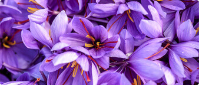

Своя ніша: як вирощувати шафран і скільки на ньому можна заробити
Підприємець з Херсонщини Віталій Шакало 5 років тому розпочав свій бізнес із вирощування шафрану.


Дякую за Ваше звернення.
Наш оператор з вами зв’яжеться найближчим часом.